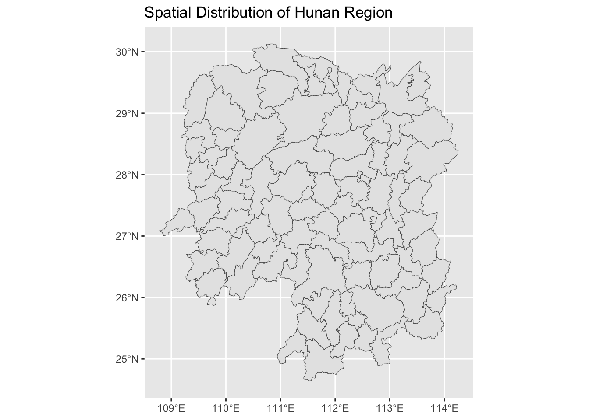

In this exercise, we will focus on exploring geospatial and aspatial datasets from Hunan province. You will learn how to load, clean, and visualize geospatial data, and combine it with aspatial data to perform basic exploratory data analysis (EDA).
We will be working with the following tools and packages: - R for data manipulation and analysis - ggplot2 for data visualization - sf for geospatial data handling - dplyr for data wrangling
Part 1: Data Loading and Inspection
# Load necessary librarieslibrary(sf)
Warning: package 'sf' was built under R version 4.2.3
Linking to GEOS 3.11.0, GDAL 3.5.3, PROJ 9.1.0; sf_use_s2() is TRUE
library(ggplot2)
Warning: package 'ggplot2' was built under R version 4.2.3
library(dplyr)
Warning: package 'dplyr' was built under R version 4.2.3
Attaching package: 'dplyr'
The following objects are masked from 'package:stats':
filter, lag
The following objects are masked from 'package:base':
intersect, setdiff, setequal, union
── Column specification ────────────────────────────────────────────────────────
Delimiter: ","
chr (2): County, City
dbl (27): avg_wage, deposite, FAI, Gov_Rev, Gov_Exp, GDP, GDPPC, GIO, Loan, ...
ℹ Use `spec()` to retrieve the full column specification for this data.
ℹ Specify the column types or set `show_col_types = FALSE` to quiet this message.
# View the first few rows of the datasetshead(hunan)
Simple feature collection with 6 features and 7 fields
Geometry type: POLYGON
Dimension: XY
Bounding box: xmin: 110.4922 ymin: 28.61762 xmax: 112.3013 ymax: 30.12812
Geodetic CRS: WGS 84
NAME_2 ID_3 NAME_3 ENGTYPE_3 Shape_Leng Shape_Area County
1 Changde 21098 Anxiang County 1.869074 0.10056190 Anxiang
2 Changde 21100 Hanshou County 2.360691 0.19978745 Hanshou
3 Changde 21101 Jinshi County City 1.425620 0.05302413 Jinshi
4 Changde 21102 Li County 3.474325 0.18908121 Li
5 Changde 21103 Linli County 2.289506 0.11450357 Linli
6 Changde 21104 Shimen County 4.171918 0.37194707 Shimen
geometry
1 POLYGON ((112.0625 29.75523...
2 POLYGON ((112.2288 29.11684...
3 POLYGON ((111.8927 29.6013,...
4 POLYGON ((111.3731 29.94649...
5 POLYGON ((111.6324 29.76288...
6 POLYGON ((110.8825 30.11675...
County City avg_wage deposite
Length:88 Length:88 Min. :26832 Min. : 564.1
Class :character Class :character 1st Qu.:31480 1st Qu.: 4306.9
Mode :character Mode :character Median :33070 Median : 6677.3
Mean :33465 Mean : 7514.1
3rd Qu.:34247 3rd Qu.: 9502.6
Max. :54540 Max. :24332.0
FAI Gov_Rev Gov_Exp GDP
Min. : 1005 Min. : 108.4 Min. : 683.6 Min. : 1490
1st Qu.: 3911 1st Qu.: 307.3 1st Qu.:1451.7 1st Qu.: 5844
Median : 6854 Median : 455.2 Median :2037.0 Median :10483
Mean : 9021 Mean : 646.7 Mean :2155.9 Mean :14931
3rd Qu.:10212 3rd Qu.: 637.3 3rd Qu.:2638.1 3rd Qu.:19131
Max. :49234 Max. :5350.0 Max. :7885.5 Max. :88009
GDPPC GIO Loan NIPCR
Min. : 8497 Min. : 514 Min. : 358 Min. : 2895
1st Qu.:14566 1st Qu.: 4965 1st Qu.: 2242 1st Qu.: 3981
Median :20433 Median : 10698 Median : 3683 Median : 6119
Mean :24405 Mean : 19227 Mean : 4687 Mean : 7095
3rd Qu.:27224 3rd Qu.: 22223 3rd Qu.: 5082 3rd Qu.: 9768
Max. :88656 Max. :148976 Max. :40534 Max. :17070
Bed Emp EmpR EmpRT
Min. : 392 Min. : 73.65 Min. : 62.0 Min. : 33.6
1st Qu.:1111 1st Qu.:231.56 1st Qu.:191.2 1st Qu.:105.5
Median :1642 Median :363.79 Median :284.2 Median :171.2
Mean :1765 Mean :388.71 Mean :316.4 Mean :190.4
3rd Qu.:2240 3rd Qu.:525.04 3rd Qu.:433.5 3rd Qu.:263.5
Max. :6225 Max. :919.62 Max. :757.6 Max. :451.6
Pri_Stu Sec_Stu Household Household_R
Min. : 5.91 Min. : 3.201 Min. : 27.15 Min. : 30.40
1st Qu.: 24.09 1st Qu.:15.095 1st Qu.: 99.15 1st Qu.: 87.95
Median : 36.85 Median :24.834 Median :162.85 Median :152.85
Mean : 43.08 Mean :27.609 Mean :175.04 Mean :159.62
3rd Qu.: 58.26 3rd Qu.:36.248 3rd Qu.:245.32 3rd Qu.:218.22
Max. :112.20 Max. :68.853 Max. :391.70 Max. :369.80
NOIP Pop_R RSCG Pop_T
Min. : 10.0 Min. : 57.7 Min. : 354.5 Min. : 92.3
1st Qu.: 47.0 1st Qu.:227.3 1st Qu.: 1757.2 1st Qu.: 333.1
Median : 80.5 Median :348.7 Median : 3437.8 Median : 572.5
Mean :107.3 Mean :369.3 Mean : 4164.7 Mean : 586.8
3rd Qu.:124.0 3rd Qu.:517.0 3rd Qu.: 5630.2 3rd Qu.: 792.0
Max. :733.0 Max. :834.1 Max. :22604.0 Max. :1285.5
Agri Service Disp_Inc RORP
Min. : 527.2 Min. : 5.2 Min. : 11954 Min. :0.2357
1st Qu.: 2255.3 1st Qu.: 1576.1 1st Qu.: 14966 1st Qu.:0.5968
Median : 3700.7 Median : 5932.5 Median : 18542 Median :0.6517
Mean : 4705.9 Mean : 8678.9 Mean : 26133 Mean :0.6298
3rd Qu.: 6312.9 3rd Qu.:11727.5 3rd Qu.: 21774 3rd Qu.:0.6850
Max. :18328.5 Max. :53160.0 Max. :183252 Max. :0.7606
ROREmp
Min. :0.4545
1st Qu.:0.7565
Median :0.8300
Mean :0.8037
3rd Qu.:0.8653
Max. :0.9179
Part 2: Data Cleaning
Before performing analysis, we need to ensure the datasets are clean. In this section, we will: 1. Handle missing values in the aspatial dataset. 2. Prepare the datasets for spatial analysis.
Task 2: Identify and handle missing values
Check for missing values in the aspatial data.
Decide how to handle them (remove rows, fill with mean/median, etc.).
# Check for missing values in the aspatial datacolSums(is.na(hunan2012))
County City avg_wage deposite FAI Gov_Rev
0 0 0 0 0 0
Gov_Exp GDP GDPPC GIO Loan NIPCR
0 0 0 0 0 0
Bed Emp EmpR EmpRT Pri_Stu Sec_Stu
0 0 0 0 0 0
Household Household_R NOIP Pop_R RSCG Pop_T
0 0 0 0 0 0
Agri Service Disp_Inc RORP ROREmp
0 0 0 0 0
# Remove rows with missing values (as an example)hunan2012_clean <-na.omit(hunan2012)# Verify that missing values have been handledcolSums(is.na(hunan2012_clean))
County City avg_wage deposite FAI Gov_Rev
0 0 0 0 0 0
Gov_Exp GDP GDPPC GIO Loan NIPCR
0 0 0 0 0 0
Bed Emp EmpR EmpRT Pri_Stu Sec_Stu
0 0 0 0 0 0
Household Household_R NOIP Pop_R RSCG Pop_T
0 0 0 0 0 0
Agri Service Disp_Inc RORP ROREmp
0 0 0 0 0
Part 3: Exploratory Data Analysis (EDA)
Now that the data is clean, perform some exploratory data analysis. We’ll focus on exploring the spatial distribution of data.
Task 3: Summary Statistics
Calculate and display summary statistics for key variables in the aspatial dataset.
# Get summary statistics for numerical columns in the aspatial datasummary(hunan2012_clean)
County City avg_wage deposite
Length:88 Length:88 Min. :26832 Min. : 564.1
Class :character Class :character 1st Qu.:31480 1st Qu.: 4306.9
Mode :character Mode :character Median :33070 Median : 6677.3
Mean :33465 Mean : 7514.1
3rd Qu.:34247 3rd Qu.: 9502.6
Max. :54540 Max. :24332.0
FAI Gov_Rev Gov_Exp GDP
Min. : 1005 Min. : 108.4 Min. : 683.6 Min. : 1490
1st Qu.: 3911 1st Qu.: 307.3 1st Qu.:1451.7 1st Qu.: 5844
Median : 6854 Median : 455.2 Median :2037.0 Median :10483
Mean : 9021 Mean : 646.7 Mean :2155.9 Mean :14931
3rd Qu.:10212 3rd Qu.: 637.3 3rd Qu.:2638.1 3rd Qu.:19131
Max. :49234 Max. :5350.0 Max. :7885.5 Max. :88009
GDPPC GIO Loan NIPCR
Min. : 8497 Min. : 514 Min. : 358 Min. : 2895
1st Qu.:14566 1st Qu.: 4965 1st Qu.: 2242 1st Qu.: 3981
Median :20433 Median : 10698 Median : 3683 Median : 6119
Mean :24405 Mean : 19227 Mean : 4687 Mean : 7095
3rd Qu.:27224 3rd Qu.: 22223 3rd Qu.: 5082 3rd Qu.: 9768
Max. :88656 Max. :148976 Max. :40534 Max. :17070
Bed Emp EmpR EmpRT
Min. : 392 Min. : 73.65 Min. : 62.0 Min. : 33.6
1st Qu.:1111 1st Qu.:231.56 1st Qu.:191.2 1st Qu.:105.5
Median :1642 Median :363.79 Median :284.2 Median :171.2
Mean :1765 Mean :388.71 Mean :316.4 Mean :190.4
3rd Qu.:2240 3rd Qu.:525.04 3rd Qu.:433.5 3rd Qu.:263.5
Max. :6225 Max. :919.62 Max. :757.6 Max. :451.6
Pri_Stu Sec_Stu Household Household_R
Min. : 5.91 Min. : 3.201 Min. : 27.15 Min. : 30.40
1st Qu.: 24.09 1st Qu.:15.095 1st Qu.: 99.15 1st Qu.: 87.95
Median : 36.85 Median :24.834 Median :162.85 Median :152.85
Mean : 43.08 Mean :27.609 Mean :175.04 Mean :159.62
3rd Qu.: 58.26 3rd Qu.:36.248 3rd Qu.:245.32 3rd Qu.:218.22
Max. :112.20 Max. :68.853 Max. :391.70 Max. :369.80
NOIP Pop_R RSCG Pop_T
Min. : 10.0 Min. : 57.7 Min. : 354.5 Min. : 92.3
1st Qu.: 47.0 1st Qu.:227.3 1st Qu.: 1757.2 1st Qu.: 333.1
Median : 80.5 Median :348.7 Median : 3437.8 Median : 572.5
Mean :107.3 Mean :369.3 Mean : 4164.7 Mean : 586.8
3rd Qu.:124.0 3rd Qu.:517.0 3rd Qu.: 5630.2 3rd Qu.: 792.0
Max. :733.0 Max. :834.1 Max. :22604.0 Max. :1285.5
Agri Service Disp_Inc RORP
Min. : 527.2 Min. : 5.2 Min. : 11954 Min. :0.2357
1st Qu.: 2255.3 1st Qu.: 1576.1 1st Qu.: 14966 1st Qu.:0.5968
Median : 3700.7 Median : 5932.5 Median : 18542 Median :0.6517
Mean : 4705.9 Mean : 8678.9 Mean : 26133 Mean :0.6298
3rd Qu.: 6312.9 3rd Qu.:11727.5 3rd Qu.: 21774 3rd Qu.:0.6850
Max. :18328.5 Max. :53160.0 Max. :183252 Max. :0.7606
ROREmp
Min. :0.4545
1st Qu.:0.7565
Median :0.8300
Mean :0.8037
3rd Qu.:0.8653
Max. :0.9179
Task 4: Visualize the Spatial Distribution
Create visualizations to understand the spatial distribution of the data.
# Plot the spatial distribution of the Hunan geospatial datasetggplot(data = hunan) +geom_sf() +labs(title ='Spatial Distribution of Hunan Region')

Part 4: Data Wrangling with dplyr
Use dplyr to filter, mutate, and summarize data. We’ll link the geospatial and aspatial datasets.
Task 5: Join Geospatial and Aspatial Data
Join the hunan geospatial dataset with the hunan2012_clean aspatial dataset based on a common column (e.g., region name).
# Example: Perform a left join on the datasets based on the region name or a common keyhunan_combined <- hunan %>%left_join(hunan2012_clean, by ="County")# View the combined datahead(hunan_combined)
Summarize the data to find the mean, median, and count of a particular variable (e.g., population, income).
# Summarize the data by a grouping variable (e.g., region)summarized_data <- hunan_combined %>%group_by(County) %>%summarize(mean_income =mean(avg_wage, na.rm =TRUE))# View the summarized datasummarized_data
Create more complex visualizations to explore relationships between variables.
Task 7: Choropleth Map
Create a choropleth map to visualize a variable (e.g., income or population) across regions in Hunan.
ggplot(hunan_combined) +geom_sf(aes(fill = avg_wage)) +scale_fill_viridis_c() +labs(title ='Choropleth Map of Average Wage in Hunan Regions', fill ='Average Wage') +theme_minimal()